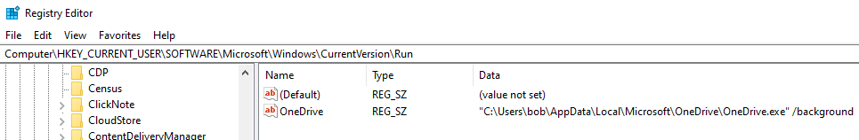

# Create & Remove Registry Values
Keys are the path -
"Software\\Microsoft\\Windows\\CurrentVersion\\Run"Values are the entries (in the picture below -
(Default) and
OneDrive)
## Create Value
int InstallRunPersistence(void)
{
BOOL okay = TRUE;
LSTATUS lstat_ret = 0;
HKEY h_key = NULL;
char exe_path[MAX_PATH] = { 0 };
// get path to current exe
GetModuleFileNameA(NULL, exe_path, MAX_PATH);
// create key
lstat_ret = RegCreateKeyA(HKEY_CURRENT_USER, "Software\\Microsoft\\Windows\\CurrentVersion\\Run", &h_key);
if (lstat_ret != ERROR_SUCCESS)
goto cleanup;
// set Run key
lstat_ret = RegSetValueExA(h_key, "persist", 0, REG_SZ, (BYTE*)exe_path, sizeof(exe_path));
if (lstat_ret != ERROR_SUCCESS)
goto cleanup;
cleanup:
if (h_key) RegCloseKey(h_key);
return lstat_ret;
}
## Remove Value
int RemoveRunPersistence(void)
{
BOOL okay = TRUE;
LSTATUS lstat_ret = 0;
HKEY h_key = NULL;
// open key (KEY_SET_VALUE perms needed for deletion)
lstat_ret = RegOpenKeyExA(HKEY_CURRENT_USER, "Software\\Microsoft\\Windows\\CurrentVersion\\Run", 0, KEY_SET_VALUE, &h_key);
if (lstat_ret != ERROR_SUCCESS)
goto cleanup;
// delete "persist" key
lstat_ret = RegDeleteValueA(h_key, "persist");
if (lstat_ret != ERROR_SUCCESS)
goto cleanup;
cleanup:
if (h_key) RegCloseKey(h_key);
return lstat_ret;
}